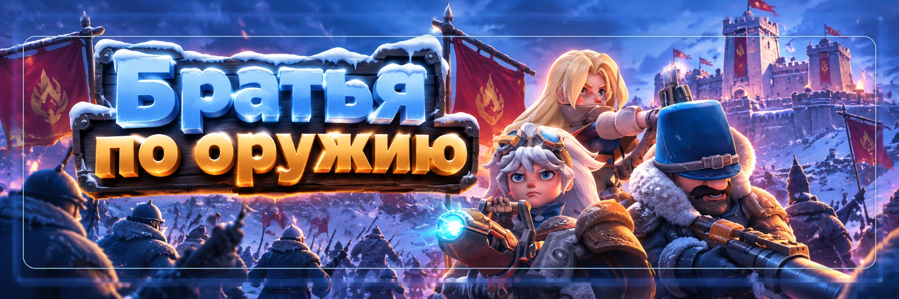

Братья по оружию
Автор: SOVA58
PvP-событие, где очки дают за раненые и потерянные войска противника. Чем выше уровень войск, тем больше очков.
🚨 Сначала правила государства
Перед атаками проверьте правила своего государства: кого можно атаковать, разрешены ли ресурсные точки, есть ли защищённые альянсы и ограничения по атакам.
Событие не отменяет правила государства.
🎯 За что дают очки
Учитываются потери и тяжело раненые войска противника. Лёгкие раненые не учитываются.
Высокоуровневые войска дают больше очков.
⛏️ Ресурсные точки
Один из самых безопасных способов набора очков, если это разрешено правилами. Обычно там слабее герои и меньше риск, чем при атаке города.
Если не хотите участвовать, лучше не оставлять марши на сборе.
🏙️ Атаки на города
Перед атакой делаем разведку, смотрим героев и войска противника и проверяем свой медпункт.
Не атакуем только потому, что город без щита.
🏥 Следим за медпунктом
Перед событием освободите медпункт и подготовьте лечение. После серьёзных боёв используйте простое правило:
остановились → полечились → продолжили.
🤝 Договорные очки
Можно заранее договориться и обмениваться атаками через ресурсные точки или лагеря. Главное, делать это по согласованию и не нарушать правила государства.
🏰 Форты и замок
Если событие совпадает с боями за форты или Солнечный замок, очки удобно получать прямо во время общей битвы, без отдельной охоты по карте.
🛡️ Если не участвуем
- ставим щит;
- не оставляем войска на обычных ресурсных точках;
- используем защищённые здания альянса.
💬 Опыт игроков
- сначала проверяем правила, потом атакуем;
- высокие уровни войск выгоднее по очкам;
- ресурсные точки обычно безопаснее городов;
- медпункт проверяем после серьёзных боёв;
- форты и замок часто выгоднее случайной охоты;
- если награды не нужны, щит проще лечения.
🚫 Частые ошибки
- атаковать без разведки;
- забыть про медпункт;
- оставить марши на сборе;
- гнаться за рейтингом любой ценой;
- нарушить правила государства.
✅ Быстрая схема
Хотим очки:
🔍 правила → 🎯 цель → ⚔️ атака → 🏥 медпункт → ❤️ лечение
Не участвуем:
🛡️ щит → ⛏️ убрать марши → 🏰 безопасные здания
Главное
Сначала правила государства, потом очки.
И не забиваем медпункт ради красивого места в рейтинге.